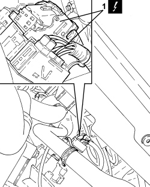
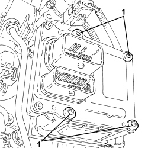
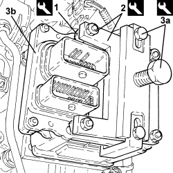
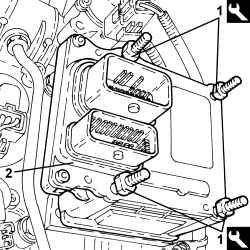

2127E10 HYDRAULIC SPEED SELECTION SYSTEM CONTROL UNIT - R.R.
- Path
- Procedures > 21 GEARBOX UNIT > 2127 ELECTRO-HYDRAULIC SELECTION GEARBOX EXTERNAL CONTROLS > 2127E GEAR CONTROL SELECTION ELECTRIC SYSTEM > 2127E10 HYDRAULIC SPEED SELECTION SYSTEM CONTROL UNIT - R.R.
- Kind
- repair procedure (removal / refitting; the operation number is the code)
- Applies to
- engines: 2.2 JTS; all production periods
- Interactive page
- https://sloeber94.github.io/elrnDB-aBrrSpdr/en/#/946004314
Applies to: engines: 2.2 JTS; all production periods
 Removing
Removing
 Refitting
Refitting- Place the gear lever in N.
Op. 7055B54 UNDER ENGINE PROTECTION/GUARD - R.R.
Applies to: engines: 2.2 JTS; all production periods
1. Disconnect the electrical connections for the control unit.
Description | Connector | |
|---|---|---|
1 | Robotized gearbox control unit |

Applies to: engines: 2.2 JTS; all production periods
1. Loosen the control unit retaining bolts.

Applies to: engines: 2.2 JTS; all production periods
- Fit the tool for removing the control unit as follows:
Tool | Description | Function | Validity |
|---|---|---|---|
2000017800 | Robotized transmission control unit removing-refitting kit | Removing-refitting robotized transmission control unit | 2.2 JTS Selespeed |
1. tighten the studs in the control unit fastening openings
2. fit the reaction plate and secure it to the studs usign the nuts
3. fit the extractor (3a) and tighten the bolt to disconnect the control unit (3b) from the solenoid valve contact plates.

Applies to: engines: 2.2 JTS; all production periods
- Remove the equipment together with the control unit.
- Remove the control unit gasket.
Applies to: engines: 2.2 JTS; all production periods
Refitting
Removing- Check that the solenoid valve contact plates are correctly positioned.
- Fit a new seal on the control unit.
- Place the studs for tool no. 2000017800 in the control unit fastening openings.
1. Partly tighten the studs in the four openings in the control unit mounting.
2. Press fit the control unit on the solenoid valve contact plates.
- Undo the studs and remove them.
- Fasten the control unit tightening the bolts to the recommended torque in a cross sequence.
Component | Fastening | dia | Value (daNm) | Validity |
|---|---|---|---|---|
Robotized gearbox electronic control unit | Bolt | - | 1.0 | 2.2 JTS |

Applies to: engines: 2.2 JTS; all production periods
- Connect the electrical connections for the control unit.
- Place the heater plugs control unit mounting bracket in its housing and secure it using the bolts.
Op. 5580E40 ANTI-THEFT DEVICE SIREN - R+R
Op. 5530B52 BATTERY SUPPORT/DRIP TRAY - R.R
Op. 7055B54 UNDER ENGINE PROTECTION/GUARD - R.R.
- Connect an Examiner and run the auto calibration procedure.
Topics linked from this page (5)
- 5530B10 BATTERY - R+R
- 5530B52 BATTERY SUPPORT/DRIP TRAY - R.R
- 5580E40 ANTI-THEFT DEVICE SIREN - R+R
- 7055B54 UNDER ENGINE PROTECTION/GUARD - R.R.
- M054 ROBOTIZED TRANSMISSION CONTROL UNIT
Topics that link to this page (23)
- B009 ENGINE DOES NOT START WITH LEVER IN P OR N
- C005 AUTOMATIC-MANUAL SHIFT (WITHOUT DRIVER REQUEST)
- C022 THE GEARBOX IS STUCK IN A SPECIFIC GEAR
- C025 THE CAR GOES INTO NEUTRAL BY ITSELF (AT A SLOW SPEED OR WHEN STATIONARY)
- C026 THE CAR GOES INTO NEUTRAL BY ITSELF (WHEN CHANGING GEAR WHILST MOVING)
- C048 GEAR LEVER STUCK IN N
- 2127CA CHECKING THE OPERATION OF THE ROBOTIZED GEARBOX SOLENOID
- 2127ED CHECK ON OPERATION OF SHIFT LOCK LEVER RELEASE SOLENOID
- 2127EE CHECKING THE ROBOTIZED GEARBOX CONTROL UNIT POWER SUPPLY
- 2127OA CHECK ON OPERATION OF CLUTCH DISC SPEED SENSOR THROUGH ROAD TEST
- 2127OE ELECTRIC PUMP OPERATION CHECK
- 2127OL GEAR LEVER CHECK
- 2127OS CHECK ON OPERATION OF NORMAL/SPORT BUTTON
- E1050 CAN CONNECTION LINES - WIRING DIAGRAM
- E1050 CAN CONNECTION LINES - COMPONENT LOCATION
- E2022 REVERSING LIGHTS - WIRING DIAGRAM
- E2022 REVERSING LIGHTS - COMPONENT LOCATION
- E5010 IGNITION AND RECHARGING - WIRING DIAGRAM
- E5010 IGNITION AND RECHARGING - COMPONENT LOCATION
- E7051 ROBOTIZED GEARBOX - WIRING DIAGRAM
- E7051 ROBOTIZED GEARBOX - COMPONENT LOCATION
- E8010 MULTIPLE DIAGNOSTIC CONNECTOR - WIRING DIAGRAM
- E8010 MULTIPLE DIAGNOSTIC CONNECTOR - COMPONENT LOCATION